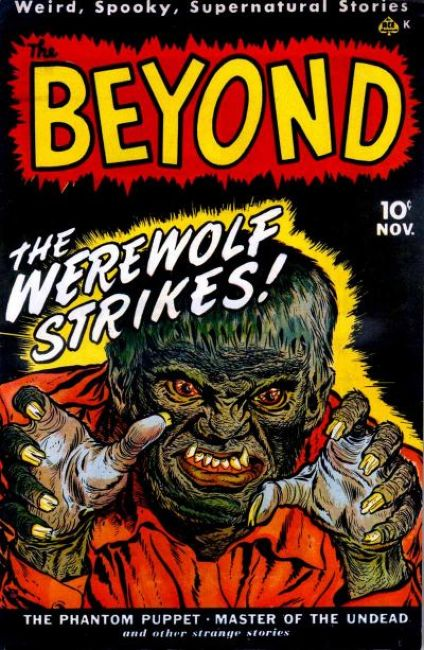
30 issues from 1950-1955 by Ace Magazines
×
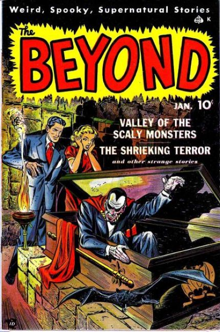
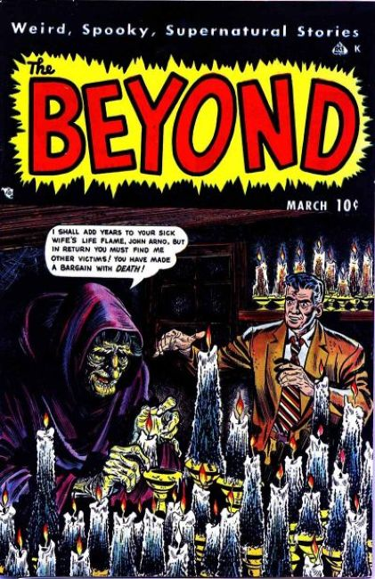
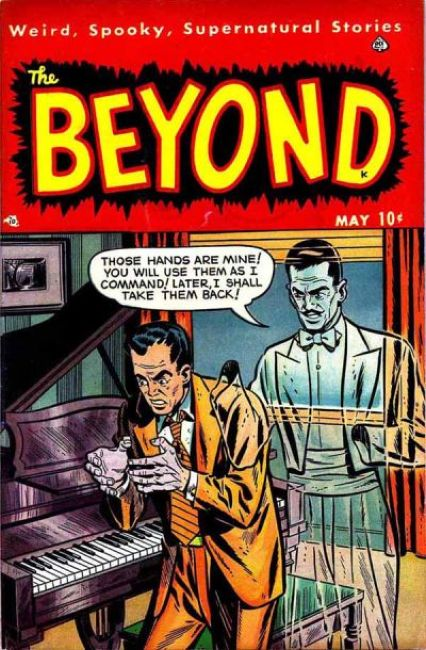
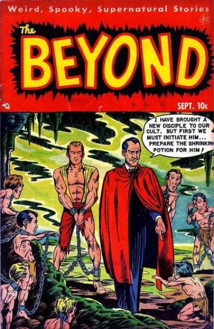
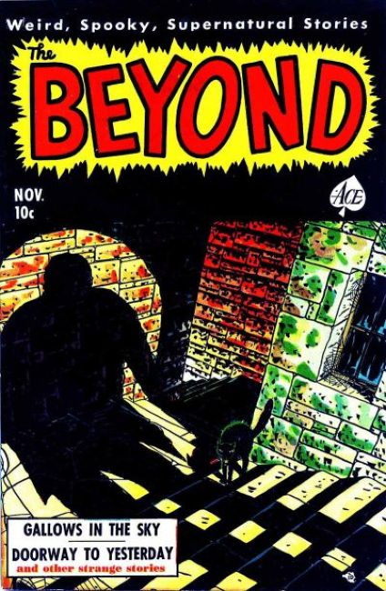
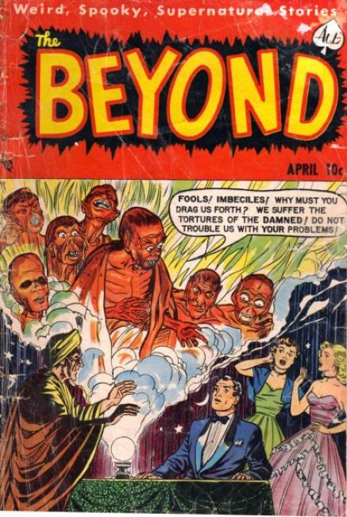
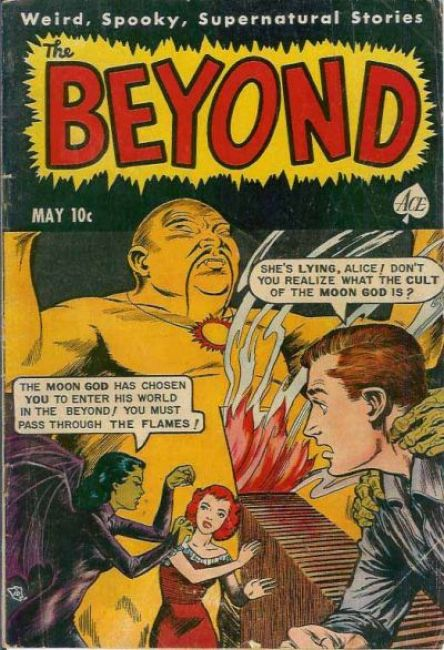
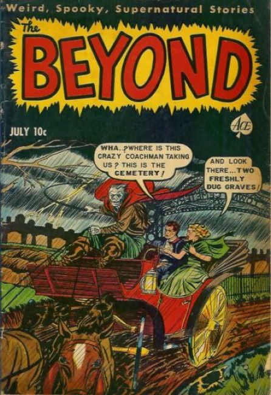
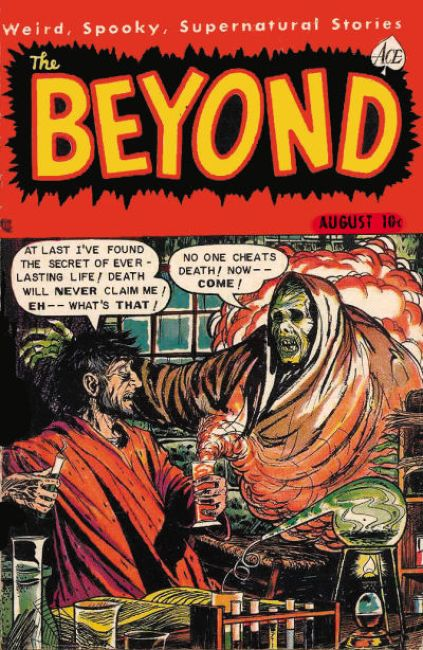
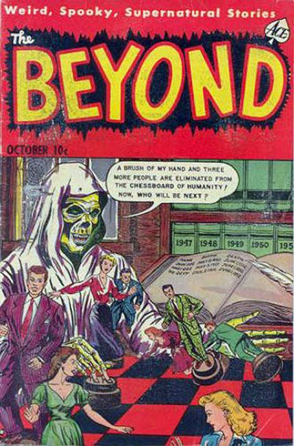
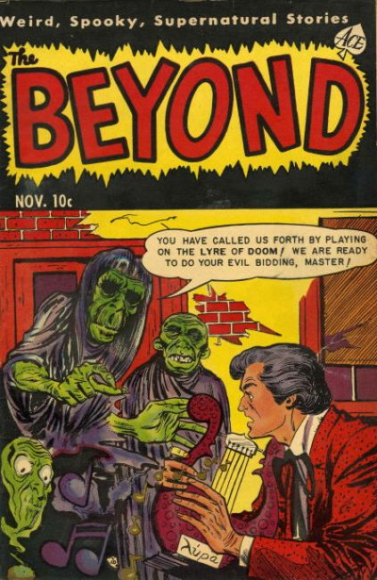
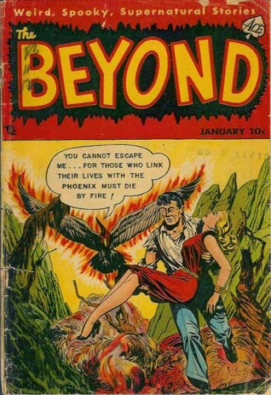
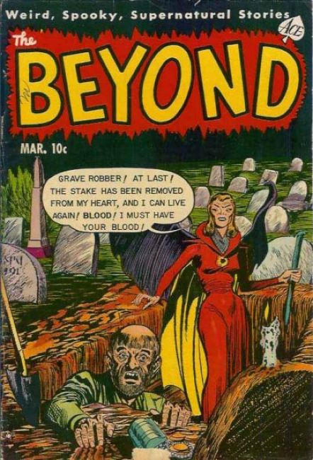
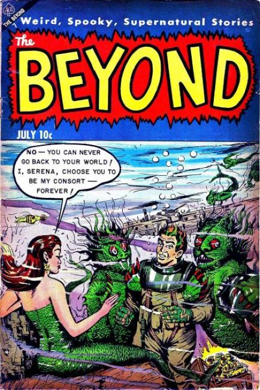
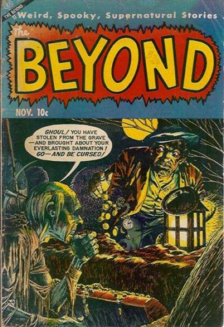
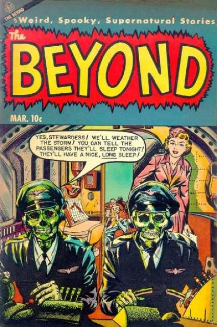
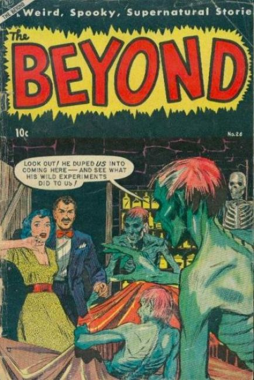
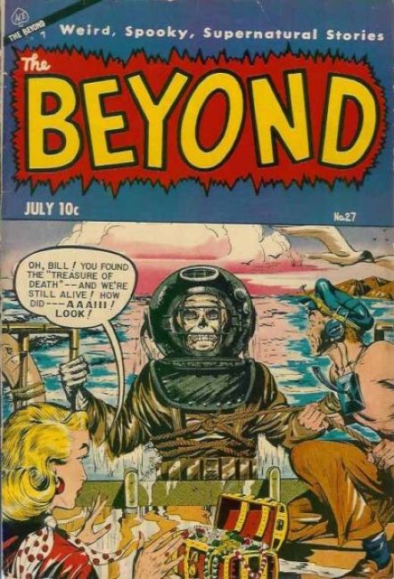
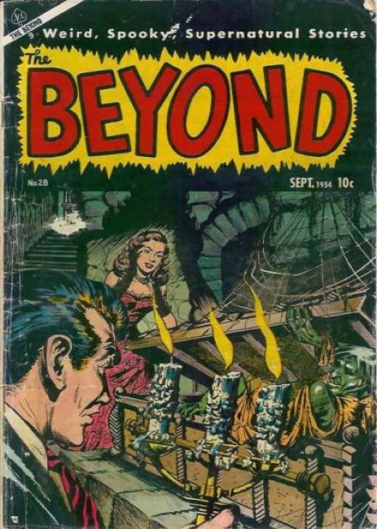
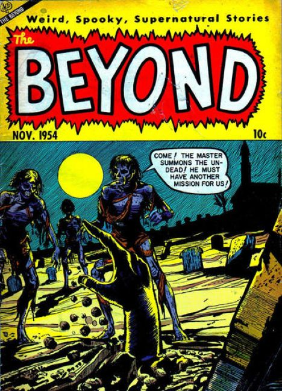
❮
❯
Monthly Horror Anthology
Issue #1 stories include:
- "The Werewolf Strikes!", art by Frank Giusto; Professor Drago is a werewolf, but working on a formula to keep his human form; But time runs out and Drago gets cornered.
- "The Reluctant Ghost," art by Ken Rice; At a seance, three people command spirits from the beyond to supply them with beauty, knowledge and money.
- "The Phantom Puppet," inks by Lin Streeter; Puppet master Lucas creates a wooden doll of Jack the Ripper; To his astonishment the doll comes alive and goes on a murder spree; When no one believes him, Lucas (stabbed by his devilish doll) sets the house on fire.
- "The Mummy's Curse" text story.
- "Master of the Undead," art by Al Hartley; Mystery writer Peter Brandon has to do research for a book on zombies; Though flying to Haiti and experiencing a wild zombie chase, he wakes up in his own New York room a week later.